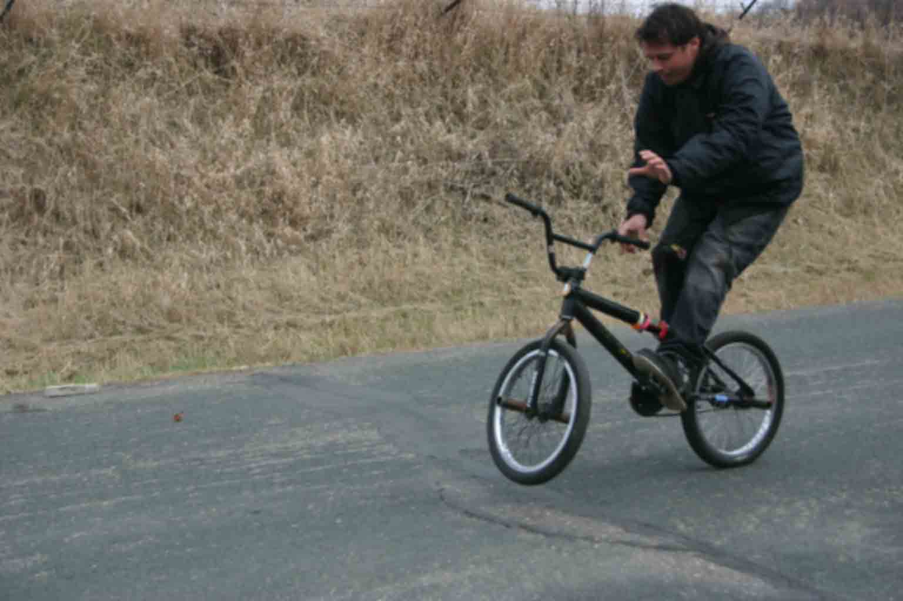
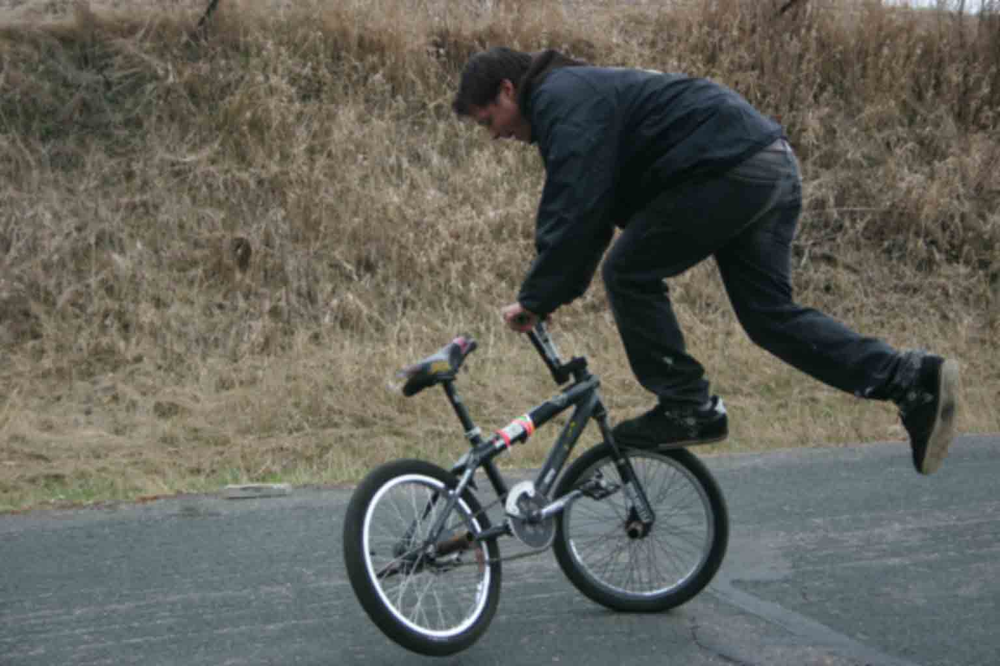
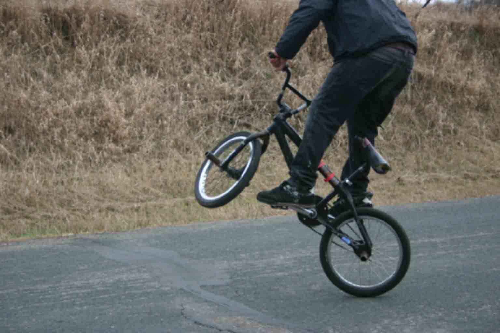
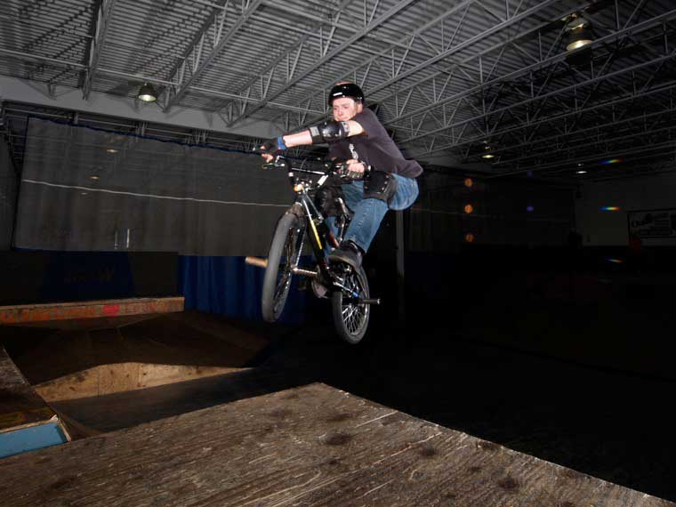
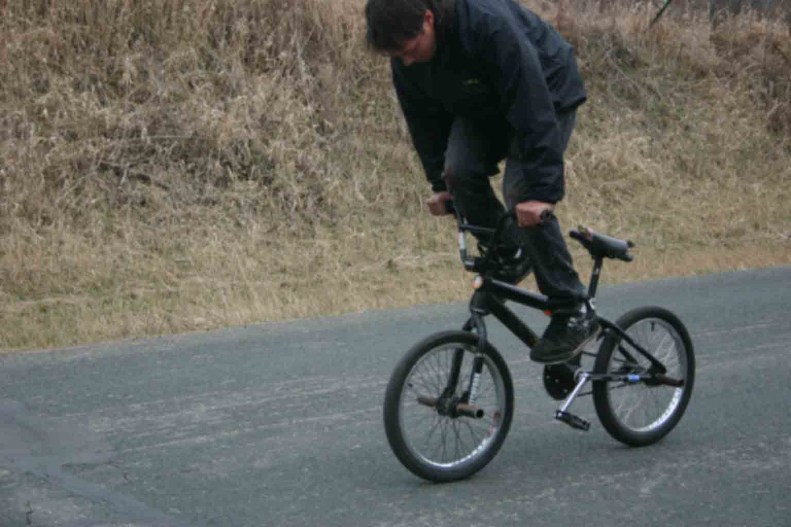

These are some great beginner bmx tricks to practice. They are super fun to do and if someone catches you land one that person will be very impressed, I know from expereince.
| Flatland Barspin | Flatland Footjam Tailwhip | Flatland 180 | X-Up |
|---|---|---|---|
|  |  |  |  |
| Pinch the seat with your knees to lift the front wheel up then spin the bars. | Jam your foot in the front wheel then spin the tail around and jump back on. | Bunnyhop then spin 180 | Turn your handlbars 180 while in the air |
| Flatland Crankflip | |||
|  | |||
| Jump and flip your peddles around then land with your feet on the peddles. |
Here is a list of tricks I can do.